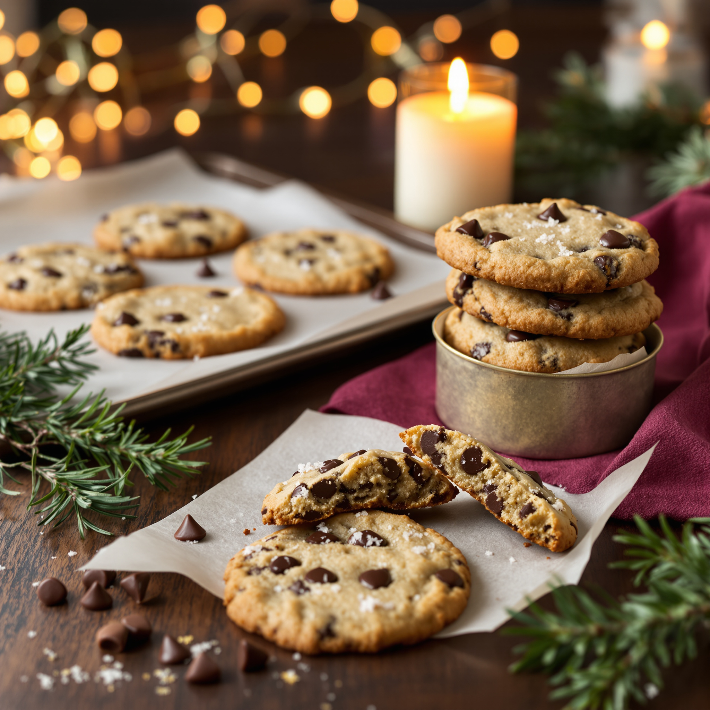
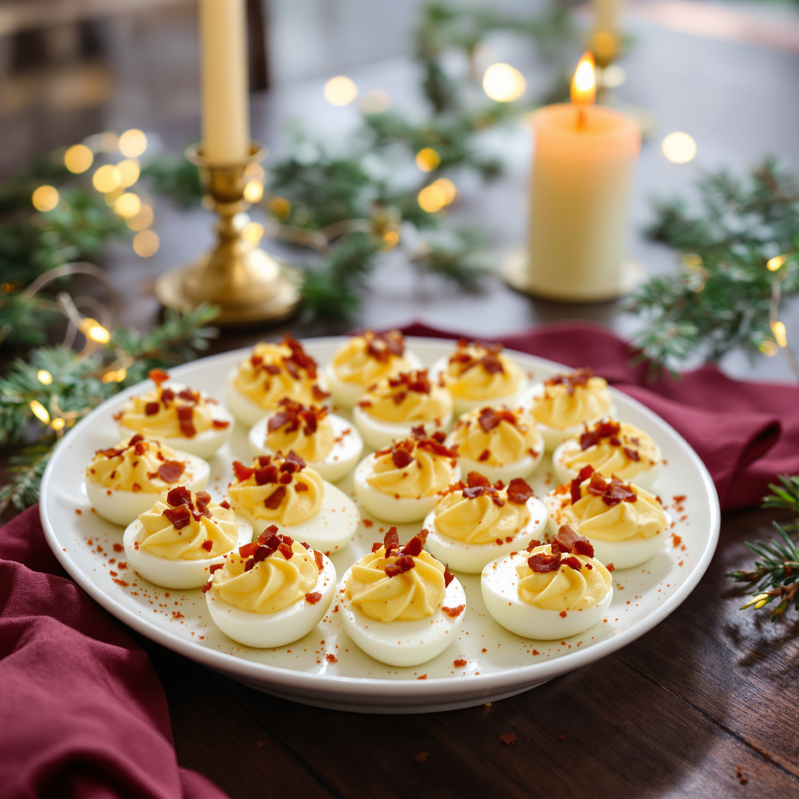

Browning the butter is the whole trick. It takes five minutes and makes people think you went to pastry school. I did not go to pastry school.
No.1

Makes 1615 minutes of work12 in the oven
Carnivore base: brown butter, egg.
Keto assist: almond flour, sugar free chocolate.
You need
1/2 cup (1 stick) butter
2/3 cup granulated sweetener, brown style if you can find it
1 egg
2 teaspoons vanilla
2 cups almond flour
1/2 teaspoon baking soda
3/4 cup sugar free chocolate chips
1/2 teaspoon salt, plus flaky salt for the top
Do this
Melt the butter in a saucepan over medium heat and keep it going about 5 minutes, swirling, until it smells nutty and you see brown flecks. Pull it off and cool 10 minutes.
Whisk the sweetener, egg, and vanilla right into the pan. Stir in the almond flour, baking soda, and salt, then the chips.
Chill the dough 20 minutes. Heat the oven to 350°F.
Scoop 16 balls onto a parchment lined sheet pan and press each one down to about half an inch. Bake 10 to 12 minutes, until the edges are golden.
Hit them with flaky salt and leave them on the pan 15 minutes. They finish setting as they cool. Do not skip this.
The Reveal. Carry them in a plain tin with wax paper. When someone asks for the recipe, say it’s a family thing. After the second cookie: “No sugar. No flour. Butter, almonds, and discipline.”
Bring It to the Party
Deviled Eggs of Christmas Past
Built on the classic deviled egg, loaded with bacon.
Every grandmother in America has brought deviled eggs to a party. These are hers, with bacon, and they are gone in the first ten minutes.
No.11

Makes 24 halves25 minutes
Carnivore base: eggs, bacon.
Keto assist: mayonnaise, mustard, pickle juice.
You need
12 eggs
1/3 cup mayonnaise
2 teaspoons mustard
2 teaspoons dill pickle juice
6 slices bacon, cooked crisp and crumbled
Smoked paprika
Salt and pepper
Go full carnivore: swap the mayonnaise for sour cream and leave out the mustard and pickle juice.
Do this
Cover the eggs with cold water in a pot and bring to a boil. Lid on, heat off, 12 minutes. Move them to ice water, then peel.
Cut each egg in half the long way and pop the yolks into a bowl.
Mash the yolks with the mayonnaise, mustard, pickle juice, salt, and pepper until smooth. Stir in half the bacon.
Spoon the filling back into the whites, or pipe it from a zip bag with the corner cut off.
Top with the rest of the bacon and a dusting of paprika. Keep cold until you leave.
The Reveal. Carry them in an egg tray or a muffin tin so they don’t slide. No reveal needed on this one. Just say: “Eat as many as you want. This is what I eat every day.”
Bring It to the Party
Meatball Ornaments
Built on the cocktail meatball, with a melted cheese center.
String cheese is the hack. One stick cut in four gives you four perfect centers. Stack them on a tray like ornaments and stand back.
Heat the oven to 400°F and line a sheet pan with parchment.
Mix the beef, egg, parmesan, pork rinds, Italian seasoning, garlic powder, and salt with your hands.
Scoop a golf ball of meat, press a piece of cheese into the middle, and seal the meat all the way around it. Make 24.
Bake 16 to 18 minutes, until browned and cooked through.
Put a toothpick in each one. Serve with warm marinara that has no sugar added.
The Reveal. Bring them in a slow cooker on warm. When somebody asks what’s holding them together: “Parmesan and pork rinds. Not a breadcrumb in there.”
Breads
Christmas Morning Cinnamon Rolls
Built on the cheese dough cinnamon roll with cream cheese icing.
Build them Christmas Eve, cover the pan, and put it in the fridge. In the morning you bake while everyone opens presents. The house smells like a bakery and you look like a hero.
2 cups shredded low moisture mozzarella, from a bag
4 ounces cream cheese, divided
1 1/2 cups almond flour
1 egg
1/4 cup brown style sweetener, plus 3 tablespoons powdered sweetener for the icing
5 tablespoons butter, divided
1 tablespoon cinnamon
Do this
Heat the oven to 375°F. Microwave the mozzarella and 2 ounces of the cream cheese 90 seconds, stir, then 30 more. Knead in the almond flour and egg with wet hands until smooth.
Roll the dough between two sheets of parchment into a 9 by 12 rectangle. Melt 3 tablespoons of the butter and brush it over the dough. Sprinkle with the brown style sweetener and cinnamon.
Roll it up from the long side and cut 9 slices. Set them cut side up in a buttered 8 by 8 pan.
Bake 20 to 22 minutes, until golden. Add 3 to 5 minutes if the pan came straight from the fridge.
Beat the remaining 2 ounces cream cheese, 2 tablespoons soft butter, and the powdered sweetener until smooth. Spread it over the warm rolls.
The Reveal. Carry the pan to the table still warm. Wait for the first “oh my gosh.” Then: “Merry Christmas. There’s no sugar and no flour in that pan.”